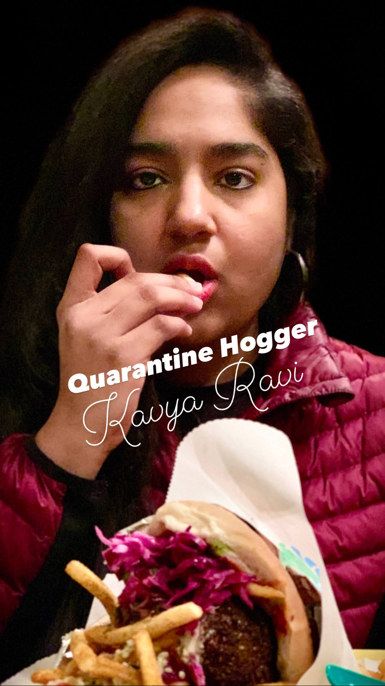

The Perfect South Inidian Vegetarian Thali
South Indian Thali on a banana leaf ......Drooling !!!!!!

Let Me Tell You About This Maharastrian Speciality - Pav Bhaji
Once again, Drooling Isn't it

FriedRice, Indo-Chinese Cuisine
Great Presentation. Taste was also similarly great!!!!!

Dosa the ultimate
Indian version of Pancake with Potato Stuffing inside and Ghee on top and then some Chutney on the side. Yummy!!!!!!.

All I Need Is a Idly for Breakfast
Best Breakfast Ever. If you havent tried,then you must.

Karnataka Speecial!!!! Akkiroti
Specaiality from the state I come from in India.

Poori Chole, A Real Classic
Just the pic is enough to be tempted !!!!.

KharaBath
Last but not the least a speaciality from my hometown called Kharabath.
About Me, The Food Woman

I am Who I Am!
Real passion for cooking and eating good delicious food
Just me, myself and I, Just started to learn cooking a year ago after my marriage and here I am today creating a Blog with delicious food i cooked through this quarentine period and I am Loving It !!!!!